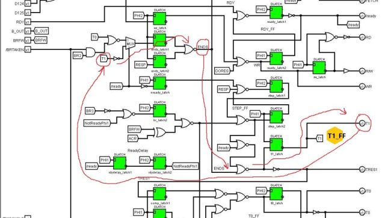
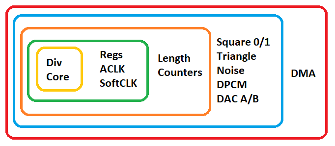
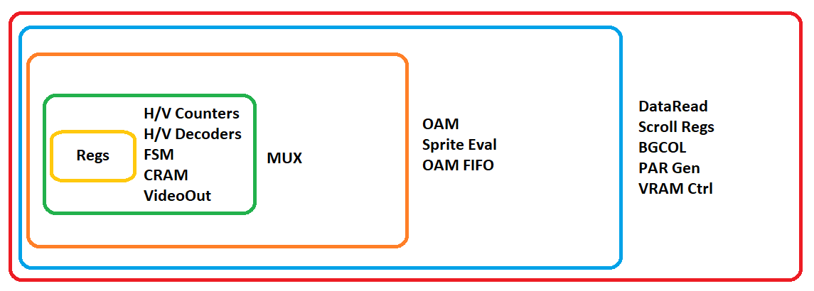

Здесь расположены функциональные симуляторы больших микросхем и ядер.
M6502Core
Эмулятор процессорного ядра MOS 6502 на уровне вентилей.
Да, всё так просто. Мы берём логические схемы 6502 из Wiki и просто повторяем их на C++.
Чтобы понять, что здесь происходит, достаточно понимать, как работают схемы. Код просто повторяет их работу.
Подходы к симуляции
Некоторые модули симулируются сразу с выдачей значений на выходах. А для некоторых симуляция и выдача значений разделены для удобства.
В целом исходный код немного похож на Verilog, но, в отличие от последнего, мы сами выбираем последовательность исполнения элементов схемы, имитируя тем самым задержку распространения, которая есть в реальных схемах.
Если у модуля мало входов/выходов, они передаются как параметры. Если входов/выходов много, в качестве параметра используется массив, индексируемый определениями enum.
Комбинационные и последовательные схемы
Как известно, схемы бывают двух типов: простые однонаправленные каскады вентилей (NOR, NAND) и циклические (последовательные) схемы на триггерах (Flip/flops).
Комбинационные схемы симулируются просто повторением работы вентилей. Без всяких хитростей.
К последовательным схемам (триггерам, FF) применяется следующий подход:
- Входная стадия использует сохранённое значение триггера (
ff.get) - Выходная стадия обновляет текущее значение триггера (
ff.set) - При этом неважно, на каких элементах построен триггер. Это могут быть 2 замкнутых инвертора, 2 замкнутых NOR или любое другое циклическое замыкание
- Место «хранения» триггера в циклической схеме выбирается произвольно, но обычно ближе к выходу триггера
Следует отметить, что в 6502 довольно много скрытых и довольно запутанных циклов, например:

Шины
Модули, подключённые к внутренним шинам, требуют особого подхода и определённого порядка исполнения, как написано здесь: https://github.com/emu-russia/breaks/blob/master/BreakingNESWiki_DeepL/6502/context_control.md
Следует также учитывать случай, когда несколько источников (например, регистры) одновременно выставляют свои значения на одну и ту же шину. Для решения таких ситуаций («конфликтов шины») необходимо использовать правило «Ground wins».
Здесь учитывается особенность 6502, при которой шины «предзаряжаются» во время PHI2. Это требуется для формирования констант (например, адреса стека, адреса прерывания). Зарядка выполняется в самом начале симуляции.
Оптимизация
M6502Core с некоторой натяжкой можно назвать пригодным для приложений реального времени.
Для оптимизации используются следующие подходы:
- Разделение фаз PHI1/PHI2 через if/else
- Предвычисление комбинационной логики с помощью таблиц (см., например, predecode.cpp).
- Упаковка битов шин и регистров в uint8_t — позволяет избежать циклов по всем битам
- Симуляция логических схем высокого уровня (см., например, alu.cpp).
Узким местом является random logic, на которую уходит 50–60 % времени вычислений.
Кроме того, сейчас обе части симулируются по 2 раза за каждый полутакт, чтобы стабилизировать защёлки (latches).
APUSim
Симулятор APU на уровне вентилей.
Примечание: в проекте Breaks термин APU относится ко всей микросхеме CPU (2A03/2A07), которая включает ядро 6502 и сам APU. Поэтому здесь APU и CPU — синонимы.
Подходы к симуляции
В целом все подходы обкатываются на M6502Core, в плане APU ничего особенно нового нет. Мы берём схему и повторяем её работу на C++. Сначала как-нибудь, а потом стараемся оптимизировать.
Все схемы APU можно найти здесь: https://github.com/emu-russia/breaks/tree/master/BreakingNESWiki_DeepL/APU
Чтобы упростить понимание, на следующем изображении показаны «слои», в которых симулируются отдельные части APU:

PPUSim
Симулятор PPU на уровне вентилей.
Подходы к симуляции
В целом все подходы обкатываются на M6502Core, в плане PPU ничего особенно нового нет. Мы берём схему и повторяем её работу на C++. Сначала как-нибудь, а потом стараемся оптимизировать.
Все схемы PPU можно найти здесь: https://github.com/emu-russia/breaks/tree/master/BreakingNESWiki_DeepL/PPU
Чтобы упростить понимание, на следующем изображении показаны «слои», в которых симулируются отдельные части PPU:
